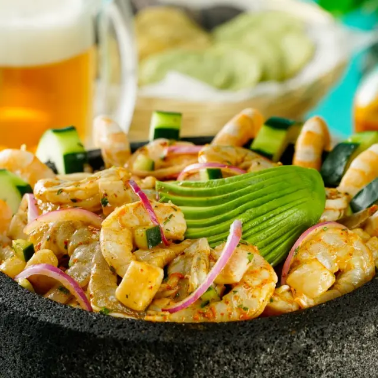
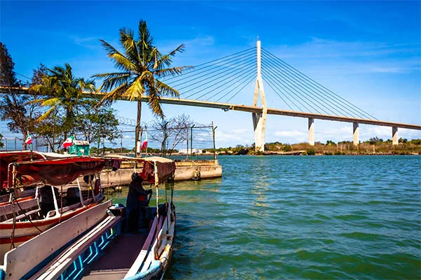
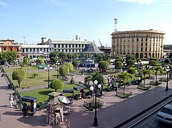

Nuestra Historia
¿Cómo comenzó todo?
El proyecto La Jaibita Tampiqueña nace de la necesidad de tener un lugar donde se muestre la grandeza de Tampico en la parte culinaria. Nuestro objetivo fue diseñar restaurante con toque cultural enfocado a promover la gastronomía tampiqueña con relación a los mariscos y que tenga una temática clásica, hogareña y que favorezca el consumo de mariscos, tanto en ciudadanos tampiqueños como turistas en la zona centro.
Poniendo algo de contexto, tenemos que con el paso del tiempo el consumo de mariscos pasó de ser algo poco común a convertirse en un emblema de la ciudad. En los 50s, la gastronomía marina apenas comenzaba a ganar terreno. Uno de los pioneros fue el restaurante La Tamaulipeca, ubicado en un edificio de estilo neoyorquino en las calles Díaz Mirón y 2 de Enero.
Su menú incluía sopa de mariscos, jaibas rellenas y salpicón de pescado. Otros establecimientos, como la Cantina Cosmopolita frente a la Plaza de Armas, empezaron a ofrecer camarones y jaibas naturales como botana, lo que atrajo a una clientela más amplia.
El bajo costo y la abundancia de los productos del mar en aquel entonces, sumado a los nuevos métodos de conservación, consolidaron esta comida como la más popular de la zona, dándole a Tampico su identidad como el "Puerto Jaibo".
Por lo tanto, hoy en día es una de las razones por las cuales el turismo se ha fortalecido, y nuestro restaurante sería un gran beneficio para la ciudad y potenciaría la promoción del patrimonio, ya que se busca promover la gastronomía marina y que La Jaibita Tampiqueña sea el primer lugar que se te venga a la mente cuando pienses en un sitio para ir a comer comida tradicional Tampiqueña, ya que no solo nos limitamos a los mariscos, sino también ofrecemos otros platillos típicos de la región.

¿Porqué elegimos los mariscos?
El hecho de que Tampico sea un puerto favorece el consumo de este tipo de productos, además, como estamos ubicados en la zona centro, el consumo es aún mayor debido a la cercanía con la zona pescera y hoteles.

El puerto Jaibo
A Tampico se le conoce así debido a la histórica abundancia de jaibas (un tipo de cangrejo azul) en los cuerpos de agua que rodean la ciudad, como la Laguna del Carpintero, el río Pánuco y el Golfo de México, convirtiéndose en un elemento icónico de su gastronomía y cultura desde principios del siglo XX. .

Una ciudad llena de vida
Tampico es un destino turístico clave en el noreste de México, destacado por su riqueza cultural, gastronómica y natural. Sus principales atractivos incluyen la Laguna del Carpintero con avistamiento de cocodrilos, el Centro Histórico, la Ruta de las Cantinas, museos interactivos y su cercanía con la Playa Miramar en Madero.
Nuestra Comida
Ofrecemos platillos exquisitos para deleitar tu paladar
Nuestros platillos no solo son deliciosos y exquisitos, sino que también están hechos con mucho cariño, en nuestro restaurante siempre tratamos de brindarles el mejor servicio de atención para que su experiencia sea única y se vayan con una sonrisa en su rostro, y no sólo pensamos en el público general sino también en los más pequeños, ya que si a ellos no se les dan mucho los mariscos, pueden optar por el delicioso menú Kids donde le ofrecemos platillos que van desde milanesas de pollo, Nuggets, tortitas de papa y hamburguesas. Con esto toda la familia puede disfrutar de la grandiosa experiencia de La Jaibita Tampiqueña, porque unos de nuestros objetivos es que nuestro restaurante sea familiar.
Favorecemos el comercio local
Otra de nuestras características es que tratamos de favorecer el comercio local, todos nuestros suministros, tanto de ingredientes, carnes, verduras y a mayor razón los mariscos, incluso nuestro merchandising, lo obtenemos de proveedores locales, mayormente de la zona de los mecados, todo con el fin de apoyarlos y traerles la mejor calidad a su plato.